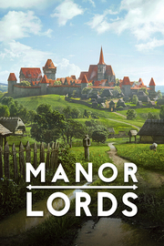

Manor Lords
Detalles
|  | |
| Tiempo de juego | No Jugado |
| Última actividad | Nunca |
| Añadido | 11/6/2024 14:41:31 |
| Modificado | 11/8/2024 17:36:46 |
| Estado de finalización | No Jugado |
| Librería | Playnite |
| Fuente | 6TB STORE |
| Plataforma | PC (Windows) |
| Fecha de lanzamiento | 4/26/2024 |
| Puntuación de la Comunidad | 86 |
| Puntuación de la Crítica | |
| Puntuación de usuario | |
| Género | Acceso anticipado Estrategia Simuladores |
| Desarrollador | Slavic Magic |
| Editor | Hooded Horse |
| Característica | Cloud Saves Logros De Préstamo Familiar Un Jugador |
| Enlaces | Punto de encuentro Discusiones Guías Noticias Página de la tienda PCGamingWiki Logros |
| Tag | Acceso anticipado Acción Aventura Bélicos Construcción de ciudades Estrategia Fantasía oscura Históricos Medievales Modificables Mundo abierto Personalización de personajes Primera persona Realistas Rol Sandbox Simulación Supervivencia Tercera persona Un jugador |
Descripción

Manor Lords es un juego de estrategia que te hará experimentar la vida de un señor medieval. Convierte tu aldea en una ciudad próspera, encárgate de los recursos y las cadenas de producción y sírvete de la conquista para expandir tus tierras.
Manor Lords se inspira en el arte y la arquitectura de la Franconia del s. XIV y mantiene el rigor histórico en la medida de lo posible tanto en los gráficos como en las mecánicas jugables. Se han descartado los temas medievales recurrentes en favor de la precisión histórica para lograr una sensación más auténtica, variopinta y creíble.


Manor Lords es un juego de construcción de ciudades sin cuadrícula ni límites en la colocación y la rotación. Las mecánicas de construcción se basan en el crecimiento natural de pueblos y ciudades medievales reales, donde las rutas comerciales importantes y el paisaje influyeron en la forma en que estos asentamientos surgieron y se desarrollaron.
- Construye tus distritos industriales, comerciales y residenciales partiendo de un mercado central y siguiendo la disposición natural del terreno. Presta atención a la fertilidad del suelo a la hora de crear granjas, determina tus terrenos de caza de acuerdo con las poblaciones animales y asegúrate de tener acceso a suficientes bosques y yacimientos de recursos para contar con las materias primas necesarias para crecer.
- Delimita las zonas residenciales y observa cómo los lugareños construyen sus casas en el burgo siguiendo un sistema histórico de división territorial por parcelas. Cada área estará subdividida según tus carreteras y el espacio disponible, y los hogares se ajustarán en consecuencia.
- Crea ampliaciones en los patios traseros de las casas más grandes para generar recursos que no estarían disponibles de otro modo. Los propietarios no se limitan a pagar impuestos, sino que también cultivan hortalizas, crían pollos y cabras y se abastecen a sí mismos y a los vecinos con todo lo que tus granjas, pastos e industrias personales no puedan proporcionar.
- Guía a tus asentamientos a través de las peculiaridades y oportunidades que brindan las distintas estaciones y disfruta de la abundancia que traen las lluvias primaverales, pero no olvides prepararte para las inhóspitas nevadas invernales.


Desde botas a cebada, pasando por pieles y mieles, Manor Lords tiene una gran variedad de bienes típicos de la era. Hay que transportar los materiales y transformarlos en productos finales por medio de cadenas de producción. Tendrás que buscar un equilibrio entre las necesidades básicas de tu pueblo y la producción de artículos de lujo que garanticen la felicidad, así como en la elaboración de bienes comerciales para su exportación o la forja de armas y armaduras que te ayuden en tus conquistas.
- Los recursos diseminados por todo el mapa te animarán a expandirte y crear múltiples asentamientos especializados. Extrae minerales valiosos de tus colonias mineras y alimenta a tu creciente población con la carne y los cereales que obtienes de las aldeas destinadas a la agricultura, la ganadería o la caza. ¿Cómo usarás la influencia que tanto te ha costado conseguir? ¿La usarás para hacerte con una buena fuente de oro para tus forjas o darás prioridad a las regiones con suelos fértiles para tener las despensas llenas?
- La expansión descontrolada tendrá un impacto directo en el entorno. Las manadas de ciervos se alejarán de la civilización invasora, el suelo perderá fertilidad si no practicas la rotación de cultivos y la tala excesiva acabará en deforestación.
- Crea rutas comerciales para que los mercaderes ambulantes se interesen en comprar tus excedentes. Fabricar y exportar recursos variados te ayudará a obtener riquezas con las que mejorar las viviendas de tu población, importar recursos que no produces e incluso llenar las arcas personales con los impuestos generados por el comercio.


Cuentas con una pequeña porción de tierra en un amplio territorio, pero el choque entre tus ambiciones y la de los señores rivales desembocará en un conflicto inevitable. Lidera a los tuyos en la batalla, no como unidades prescindibles que puedan reemplazarse con facilidad, sino como a tus fieles súbditos. Cada muerte importa.
- Entrena una hueste de hábiles guerreros para que luchen junto a las levas que reclutes de la milicia local. Algunas veces, tendrás que pedirle a tus hombres que se encarguen de los bandidos, mientras que en otras ocasiones los liderarás para conquistar territorio, o defenderlo. Los mercenarios pueden servirte para engrosar tus filas, aunque no son baratos. ¿Llamarás a la milicia a la primera señal de problema a sabiendas de que paralizas la economía cuando ordenas a tus campesinos que tomen las armas, o usarás tus ingresos personales para contratar mercenarios?
- Libra batallas tácticas en tiempo real, condicionadas por la fatiga, las condiciones atmosféricas y el equipo. Posiciona a tus tropas con cuidado: bien organizada, una fuerza pequeña puede derrotar a un enemigo claramente superior.
- Siente el peso de la muerte incluso en la victoria. Cada soldado que cae es una persona menos en tu ciudad.


Este juego es un proyecto personal que comenzó con un solo desarrollador. No dudes en ponerte en contacto conmigo y compartir tus comentarios, ideas y críticas: tu opinión me importa.